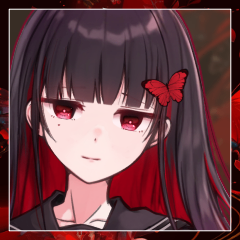

GM
ダザックが堕落の国を、
そしてこの寂れた村を訪れてより、一週間ほどが経過した。
ダザック
その間村の中を見てまわる。とにかく亡者から身を守るにはこの村は貧弱すぎるのだ。
住人に、今にも崩れそうな土壁の補修などを指示したり、見張り台を使えるようにするため資材を調達したり
ダザック
（村の入り口に罠の一つでもはれれば、我々がいない間に襲われても多少の時間は稼げそうだが…）
GM
例の化け物の暴れぶりを思うと、その罠を作るのも一苦労に思えた。
なにせこの村には余裕がない。
人が少なく、男手が少なく、資材も少ない。
GM
その中で村人たちは精一杯に救世主をもてなしていた。
GM
それでも専ら出てくるものは、
干し肉のかけらと野草の浮いた水のようなスープと、硬いパンが一欠片、といった具合だったが。
GM
ダザックが初めて訪れた夜だけは大振りの肉が出されていた。
それはあの化け物の肉で、えぐみのひどいものではあったが、
後から思えばそれもご馳走だったのだろう。
ダザック
荒野に出れば、何か使えそうなものが見つかるかもしれない、と村を炉にまかせて出歩いても、空振りを続けるばかり。
全体的にこうなのだなぁと半ば諦めが漂う。
ダザック
「使ってない家を解体して……いや…うーん」
ダザック
そんな感じであまり進展がないまま時間が過ぎていく。その間に、先日の亡者襲来でけがをした少年をたびたび見かけていた。
ダザック
手慰み程度に剣の振り方などを教えると嬉しそうにしていたが、あまりいいことのようには思えなかった
チェルシー
彼を心配してついて回る少女と、名前を呼び合うさまをよく見かけた。
ジョン
「救世主さま」
少年は欠けた歯を見せて笑う。
ジョン
「俺、昨日救世主さまと別れた後、素振り百回した！」
ダザック
「あんまり無理するなとイロリからも言われてただろ、ほどほどにしとけよ」
ジョン
「でも、俺が強くなったら、みんなもっと助かるだろ？」
ダザック
「いいか、まずは身の程を知って、体に肉をつけてから……」
ダザック
そういってから、村から提供される粗食のことを思い浮かべ
「うん、まあ気長にやっていくのが大事だ」
ジョン
ジョンとチェルシーの腕は、枯れ木のように細い。
ジョン
いかにも食いでがなさそうなこの少年を、亡者が襲ったのは食らうためでさえないのだろう。
ジョン
食物連鎖が理由ではない。
ただ、そういう化け物がいる。
ジョン
そんな過酷な世界で、
けれどこの少年は、救世主を志して目を輝かせている。
ダザック
「じゃあな、ジョン。まずは怪我が治ってからだ。チェルシー、ちゃんと見張っておいてやれ。無茶したら俺かイロリに言え」
ダザック
そういってジョンにひらひらと手を振って見せる。
ジョン
すっかりダザックに懐いた白兎の少年は不満そうに口を尖らせてみせたが。
ジョン
「またな、救世主さま！」
と、精一杯に手を振ってダザックの背を見送った。
三ノ宮 炉
これは、ダザックにとってはいくらか意外だったかもしれないが。
村を立て直し、末裔たちの生活を支えることについては、存外役に立っていなかった。
三ノ宮 炉
そういう世界から来た女だろうことが察せられた。
三ノ宮 炉
代わりに化け物の襲来には人一倍敏感だった。
故に荒野の周辺を哨戒し、化け物を追い払う任をよく引き受けていた。
三ノ宮 炉
末裔たちとはまた違った細さのその身体で、
三ノ宮 炉
化け物に怯む様子を見せることは、一度もなかった。
三ノ宮 炉
今は冷たい風に吹かれながら、見張り台に佇んでいる。
三ノ宮 炉
日毎に厳しさを増す凍えた風にも、堪えた顔は見せずにいた。
ダザック
「イロリ」
不意に見張り台の下から声がかかる
三ノ宮 炉
それから全身も紅い蝶となって掻き消えて、
三ノ宮 炉
一面灰色の雲に覆われた空の中で。
特別、暗い色をした一帯があった。
ダザック
蝶になって急に隣に現れるのはこれまでも何度かあったが、毎度驚く。どういう魔法なのだろう。
ダザック
「普通に降りて来いよ、少しは体動かせ。驚くんだよ、それ」
ダザック
「そりゃそうだけどな…まあいいや。 どれ…たしかにずいぶん暗くなってきてるな」
ダザック
「とりあえず、村の連中に家に入るよう伝えてくる。お前も戻って、窓に板でも打ち付けてくれ」
ダザック
「頼む。できるだけ窓に補強するようにもつたえてくれ」
三ノ宮 炉
戻ったダザックが家の窓の補強を始めた矢先に、炉は再びその姿をあらわした。
三ノ宮 炉
「”救世主”の存在というものは、大きいようですね」
ダザック
「ご苦労さん。まあ、雨風ぐらいならどうとでもなるだろうさ」
ダザック
「…家が飛ぶような竜巻が起こらない限りは」
三ノ宮 炉
「そこまででないことを祈りましょうか」
三ノ宮 炉
「……こと、ダザック様のお言葉と聞くと」
三ノ宮 炉
「皆さま、安堵と信頼を以てお聞きになりますよ」
ダザック
「買い被りってもんだ。特別変わったことはしてねえからな」
ダザック
「ただ少しあんたらより年食って、経験もあるだけだ」
三ノ宮 炉
「こういった暮らしを支える手段は、身についていなかったと思いますよ」
三ノ宮 炉
「ジョンとチェルシーは、元気でしたか？」
ダザック
「あぁ。ジョンの奴は素振りを100回したとか言ってたぞ。軽く注意したが、まああいつも男だな」
三ノ宮 炉
「……あの二人、いわゆる幼馴染みというやつらしいですから」
三ノ宮 炉
「ジョンの奔放さを、チェルシーはよくよく知っているんでしょうね」
三ノ宮 炉
新しい板を取り上げて、再び窓に添える。
白魚のような手が無骨な木の板を押さえている。
三ノ宮 炉
肉体労働に不満げな顔をしてみせることはあるが、
実際に役目を与えられたとなれば素直によく働く娘であった。
ダザック
「あのくらいの男は多少無茶するもんだ」
片手で器用に釘を打ち込みながら、そう答える。
ダザック
「二人一緒にでかくなってもらいたいもんだが……」とこの地のことを考えると、それ以上は言わない。
ダザック
板を打ち付けながら、ちらりと炉を見やる。
「なんか含みのある言い方だが、あんたもそういう奴に覚えがあるのか？」
三ノ宮 炉
「……人を導くのは、少しばかり得意でして」
三ノ宮 炉
「暮らしのことは知りませんけれども、亡者のような化け物の相手ならば」
三ノ宮 炉
「この世界に落ちる前から、していたのですよ」
ダザック
「……あんたのその服と似たようなものを着た人間を知ってるんだが、そいつとはだいぶ違うようだ」
ダザック
「そいつは、争いごとなんて何も知らない、みたいな風だった」
三ノ宮 炉
「あら」意外そうに目を瞬いて、自分の服に目を落とす。
三ノ宮 炉
「不思議な話ですわね。……まあ、でも」
三ノ宮 炉
「この服は本来、戦装束ではございませんもの」
三ノ宮 炉
「私の世界においては、
そもそも亡者のような化け物の実在すら知らぬものが大半」
ダザック
「そうなんだろうな。ゴブリン1匹殺してみせたら吐いてたよ」
遠くを見るような目をして、ぽつりと呟く。手は動かしつつ。補修ももうすぐ終わりそうだ。
ダザック
「雨には間に合いそうだな……あまり強くならないといいが」
三ノ宮 炉
「こればかりは、祈るしかありませんね」
三ノ宮 炉
「守るべき方々を背に戦うのは、性に合っていますの」
三ノ宮 炉
「本来、望ましく思うべきではないのですが」
ダザック
「それでも、俺はジョンが成長して、俺らの代わりにここを守れるならそれに越したことはないと思うがね」
三ノ宮 炉
「もう少し経ったら、遠出をしてもいいかもしれません。
栄えた街なら、他の救世主を見つけることも容易でしょう」
三ノ宮 炉
「もちろん、栄えた街には、それ相応の力をつけた救世主もいるのでしょうが……」
ダザック
「そうだな…猶予もあることだし……」
意識していないとあっという間に過ぎてしまいそうだ
ダザック
「それまでにできることはしておこう。 さて、補修はできたから、とりあえず一旦落ち着こうか」
ダザック
「手伝い感謝する。一人ではもっと時間かかった」
三ノ宮 炉
「一人では、嵐への備えもままならないなんて」
三ノ宮 炉
「元いた場所では、考えたこともありませんでした」
ダザック
「あんたの元居た場所ってのは、なんだったか…ニホン？ってところか？」
ダザック
「さっき話した奴はそこから来たといってたが、同じ場所なのかと思ってな」
三ノ宮 炉
「この服を着ていたなら或いは、と思っていましたが」スカーフをつまみながら。
三ノ宮 炉
「ええ。日本という国から参りました。
とっても豊かで、とっても平和で、戦いなんてどこにも起こらない国」
三ノ宮 炉
「そこで、私、化け物を殺すために育てられましたのよ」
ダザック
「そうか。顔の感じや名前の響きが似ていたからそうじゃないかと思ってな。まあ俺はそれ以外ほとんどしらないが…」
ダザック
「…よかったらここに来る前の事を聞かせてくれるか」
ダザック
「嵐になれば、外にも出れないし。嫌ならいいが」
三ノ宮 炉
片付けを終え、椅子を引いた。
膝を揃えてお行儀よく座る。
三ノ宮 炉
外には風が轟と吹き荒れ、あばら家を揺らしている。
三ノ宮 炉
「構いませんよ。
随分とお世話になっておりますもの」
三ノ宮 炉
「ここに来る前とは、どこからどこまでを話したものでしょうか」
頬に手を添え、首を傾いだ。
ダザック
それもそうだ、と肘をつく。
「あぁ、すまん。漠然とし過ぎたな……なんでもいいんだ。あんたのことに興味がある」
ダザック
「ん…？それも語弊があるか…。その、なんだ、そうだ。その化け物を殺すために育てられたってのはどういうことだ？」
三ノ宮 炉
「大丈夫ですよ、ダドック様。
勘違いなんていたしません」
三ノ宮 炉
あなたのお人柄に関してはよくよく承知しておりますから、と口添えて。
三ノ宮 炉
「先程も申し上げました通り、私の故郷は平和な地でした。
豊かで争いのない、民を脅かすものの限りなく少ない国。
それが日本です」
三ノ宮 炉
「けれど、それはほんとうの真ではないのです。
闇の裏に民を襲う、亡者のような化け物――
――妖魔なる者の存在が、一般人に対しては伏せられているだけ」
三ノ宮 炉
「そして、私は」胸元に手を当ててみせ。
三ノ宮 炉
「妖魔殺しを使命とする家に、生まれました」
ダザック
「なるほど、裏から世間を守るために、そういう目的をもって育てられたってことか」
三ノ宮 炉
「この力もまた、血脈を通じて受け継いだもの」
三ノ宮 炉
「化け物と相対するためには、相応の力がなくてはなりません」
ダザック
蝶に目を向ける。ひらひらと舞うそれは美しく思えた。
「……となると、向こうの世界はあんたがいないと困るんじゃないか」
ダザック
「いや、あんた一人だけではないだろうが……」
三ノ宮 炉
「人を導くのは、少しばかり得意でして」
三ノ宮 炉
「私が鍛え上げた、一般人だったはずの殿方」
三ノ宮 炉
「それと、そうですね、彼をずっと心配していた女の子」
三ノ宮 炉
「……それこそ、ジョンとチェルシーみたいな……」
三ノ宮 炉
「……心配は、させてしまっているかもしれないとは」
ダザック
そう語る炉の顔は、どこか寂しそうに見えた。
黙ってそれを聞き、沈黙に風が打ち付ける音が騒々しい。
ダザック
「……じゃあすぐに戻れなくてもとりあえずは問題ないわけだ。それはまぁ、良かった、のか？」
ダザック
「あー、いや。何て言うべきなんだろうな。すまない。俺は見ての通り粗忽者だから」
ダザック
「戻っても必要とされないかもしれないとなると、なかなか苦しいものは、あるな、うん」

三ノ宮 炉
少しだけ、困ったように笑った。
ダザック
「……いっそこのまま一緒に俺とこっちで生きるってのもいいのかもな」とぽつりとこぼす
三ノ宮 炉
Choice[猟奇,才覚,愛] (choice[猟奇,才覚,愛]) ＞ 猟奇
三ノ宮 炉
2d6+0=>7 判定（＋猟奇） (2D6+0>=7) ＞ 8[6,2]+0 ＞ 8 ＞ 成功
GM
＊ではダザックは-3をつけて判定をお願いします。
判定に使う能力値は任意のもので構いません（まあ才覚がセオリーです）。
ティーセットを使うことも可能です。
[ 三ノ宮 炉 ] ティーセット : 2 → 1
[ 三ノ宮 炉 ] ヤリイカ : 1 → 0
ダザック
2d6+3+2-3=>7 判定（＋才覚） (2D6+3+2-3>=7) ＞ 6[3,3]+3+2-3 ＞ 8 ＞ 成功
[ 三ノ宮 炉 ] 選ばれたくない : 0 → 1
三ノ宮 炉
「いくらなんでも、誤解を招くというものですよ」
ダザック
「うーん、その。あんたは頼りになるからな」
ダザック
「今後どうなるにせよ、いてくれたら助かるというか」
三ノ宮 炉
鬼の首を取ったように笑ってみせる。
笑って見せる。
ダザック
しまったという表情を一瞬見せ、バツがわるそうに視線を泳がす。
ダザック
「あぁ」
観念したように短い肯定を返す。
ダザック
その顔を見て、頬が緩み
「ああ、そうしてくれ」と返す。
ダザック
その笑顔を見て、自然と炉の頬に手が伸びる
三ノ宮 炉
開かれた赤い瞳が、あなたの顔を映し込む。
ダザック
「嫌なら、振りほどいてくれ」そういって頬に触れる
三ノ宮 炉
けれど寸前に、硬い声があなたの名を呼んだ。
三ノ宮 炉
「あまり、きれいなものではないんです」
ダザック
「構わんさ」と短く答え、顔を近づけていく。
GM
あばら家の外から、何重にも重なる悲鳴が響いた。
三ノ宮 炉
緊張に身を強張らせていた少女が、別の驚きに目を見開き。
三ノ宮 炉
蝶となって、あなたの鼻先に掻き消える。
GM
吹き付ける強い風が、補強したはずの窓を揺らし
GM
開けた窓から、村の様子が見渡せるようになる。
GM
氷漬けにされた家屋の上へと、積もりつつある。
亡者
光という光を吸い込むような、深淵の闇をまとう剣を腕に提げ。
亡者
凍えた風を吹きつけて、周囲のものを氷漬けにしていく。
三ノ宮 炉
炉は紅い蝶をまとうて、その亡者へと相対していた。
亡者
あなたたちのような駆け出しの救世主が太刀打ちできる存在ではない。
亡者
この村に襲い来た亡者とは性質が違う。根本的な在り方が違う。
亡者
ただ一瞥しただけで、何もかもを凍りつかせる災害の権化。
亡者
冬という概念の凶悪性を結晶化したようなそれが、
亡者
村の全てを凍てつかせながら、悠然と行進する。